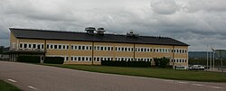

A Empresa
Fundada em 12 de agosto de 1994 na Suécia por Christian von Koenigsegg, a intenção do fundador era produzir um supercarro de classe mundial.

Muitos anos de desenvolvimento e testes levaram ao CC8S, o primeiro carro de produção de rua da empresa, entregue em 2002.
Em março de 2009, o CCXR foi escolhido pela Forbes como um dos dez mais belos carros da história. Em dezembro de 2010 o Koenigsegg Agera ganhou o prestigioso BBC Top Gear Hypercar of the Year Award (Prêmio BBC Top Gear Supercarro do Ano).
Além de desenvolver, fabricar e vender a linha de supercarros, a Koenigsegg também está envolvida em programas de desenvolvimento de "tecnologia verde", incluindo o CCXR ("Flower Power") supercarro flex e continuando para o atual Agera R. A Koenigsegg também atua em programas de desenvolvimento quando se trata de plug-in de sistemas de carros elétricos e tecnologias da próxima geração de motores de combustão. A marca também está trabalhando em um motor de pistão sem câmara para o Regera.
A Koenigsegg detém patentes na área de desenvolvimento de motores, por exemplo, o conversor catalítico Rocket que reduziu a pressão e tamanho enquanto reduzia o tempo de light-off e um sistema de resposta supercharger, que eliminou a necessidade de utilizar válvulas de desvio, e, por sua vez, reduziu o consumo e melhorou o tempo de resposta do motor.
A Koenigsegg desenvolve e produz a maioria dos principais sistemas, subsistemas e componentes necessários para seus carros internamente, em vez de depender de subcontratados. No final de 2015, a Koenigsegg tinha 97 funcionários, com um departamento de engenharia de 25 engenheiros, liderados pelo fundador.
Koenigsegg Automotive AB é uma empresa pública sueca não listada e livre. A Companhia tem cerca de 90 acionistas. Como a empresa é de livre comércio a quantidade de acionistas pode variar. Christian von Koenigsegg é o CEO e acionista maioritário.
Os Protótipos e A Produção

O projeto inicial do Koenigsegg CC foi desenhado por Christian von Koenigsegg. Ele então levou seus esboços para o designer industrial David Crafoord para fazer dos seus esboços em um modelo em escala 1:5. David então colocou seu toque pessoal ao resumo do projeto e terminou o modelo. Este modelo foi posteriormente ampliado por Sven-Harry Åkesson a fim de criar a ficha de base para o protótipo do primeiro Koenigsegg.
Após quase dois anos em construção, o veículo conceito Koenigsegg CC (Competition Coupé) foi finalmente lançado em público pela primeira vez por Rickard Rydell em um evento na pista de corrida de Anderstorp em 1996. Outros pilotos de carros de corrida de renome como Picko Troberg e Calle Rosenblad também testaram o protótipo e ficaram todos impressionados com o excelente desempenho, comprovando a qualidade do conceito e permitindo que o próximo passo fosse dado: apresentar o carro para potenciais compradores